wget https://nginx.org/download/nginx-1.21.6.tar.gz
tar -zxvf nginx-1.21.6.tar.gz
cd nginx-1.21.6
源代码目录,如下图所示:
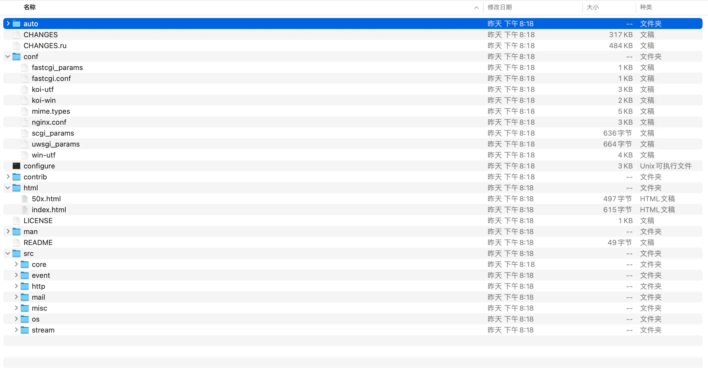
# prefix参数指定默认路径(安装，配置文件，日志目录, 临时目录等等)
# with-debug参数增加调试日志,正式运行强烈建议不要此参数
./configure --prefix=/Users/Shared/nginx --with-debug
# 更多参数及详细说明见 ./configure --help
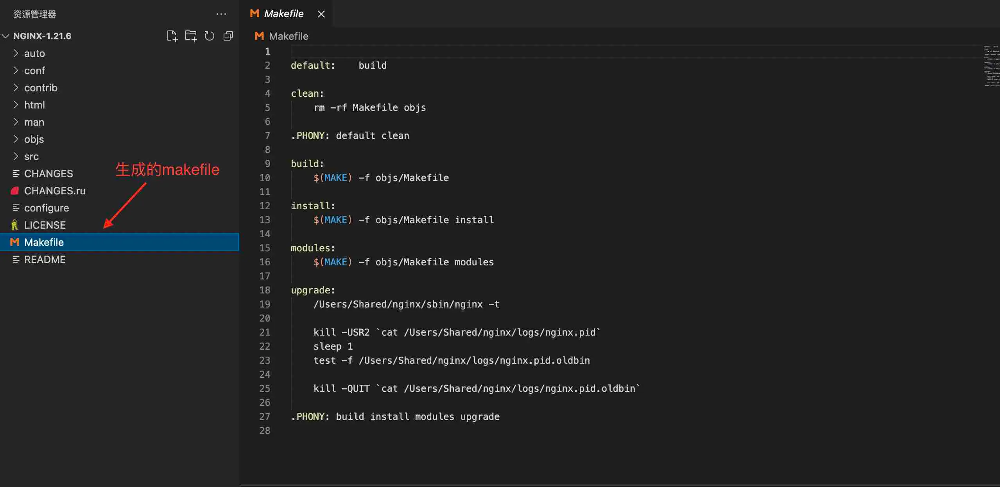
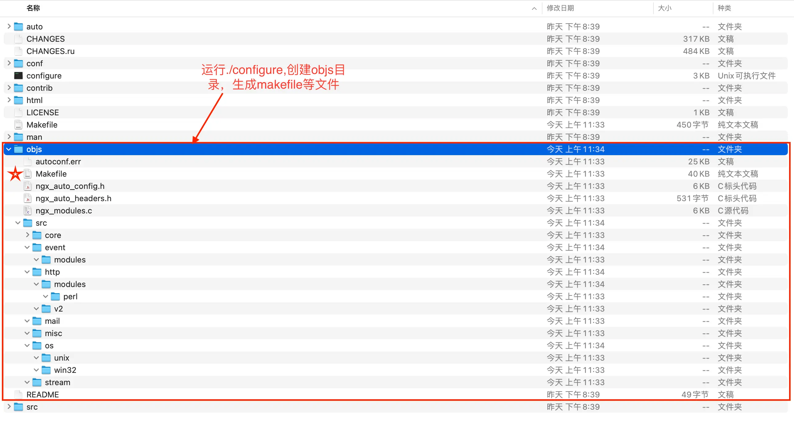
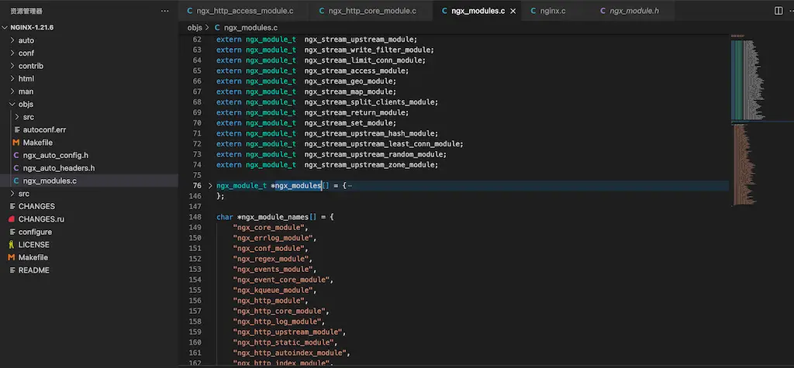
# 实际上执行上一步生成的objs/makefile
make
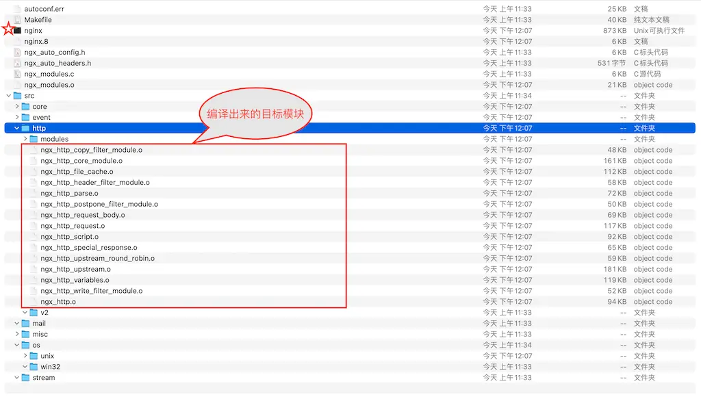
# 实际上执行上一步生成的objs/makefile
make install
install: build
test -d '$(DESTDIR)/Users/Shared/nginx' || mkdir -p '$(DESTDIR)/Users/Shared/nginx'
test -d '$(DESTDIR)/Users/Shared/nginx/sbin' \
|| mkdir -p '$(DESTDIR)/Users/Shared/nginx/sbin'
test ! -f '$(DESTDIR)/Users/Shared/nginx/sbin/nginx' \
|| mv '$(DESTDIR)/Users/Shared/nginx/sbin/nginx' \
'$(DESTDIR)/Users/Shared/nginx/sbin/nginx.old'
cp objs/nginx '$(DESTDIR)/Users/Shared/nginx/sbin/nginx'
test -d '$(DESTDIR)/Users/Shared/nginx/conf' \
|| mkdir -p '$(DESTDIR)/Users/Shared/nginx/conf'
....
test -d '$(DESTDIR)/Users/Shared/nginx/logs' \
|| mkdir -p '$(DESTDIR)/Users/Shared/nginx/logs'
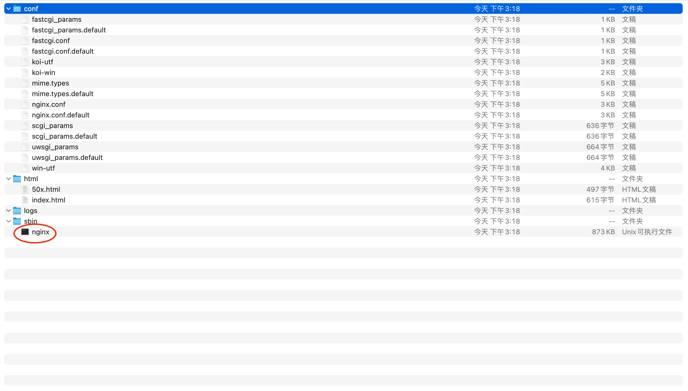
# /Users/Shared/nginx为configure中prefix参数指定
cd /Users/Shared/nginx/sbin
# -t 表示检查配置文件是否正确
./nginx -t
./nginx
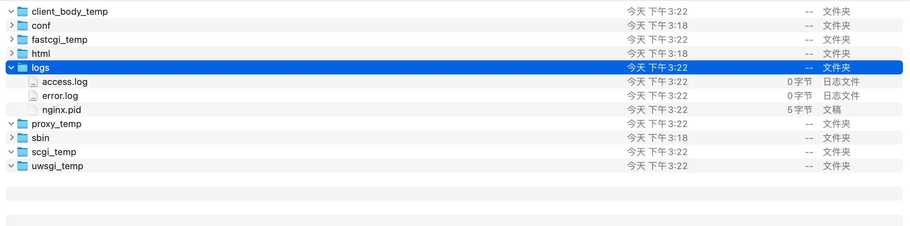
./nginx -h
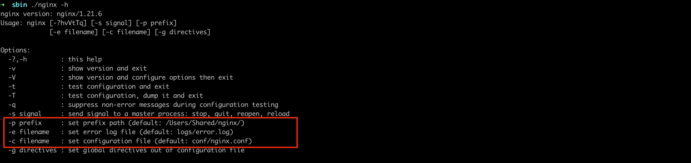
http {
...
server {
listen 80;
server_name localhost;
# 编译时需要带上--with-debug
# 如果仅看http过程,则指定等级为debug_http
error_log logs/error.log debug;
location / {
root html;
index index.html index.htm;
}
}
...
}
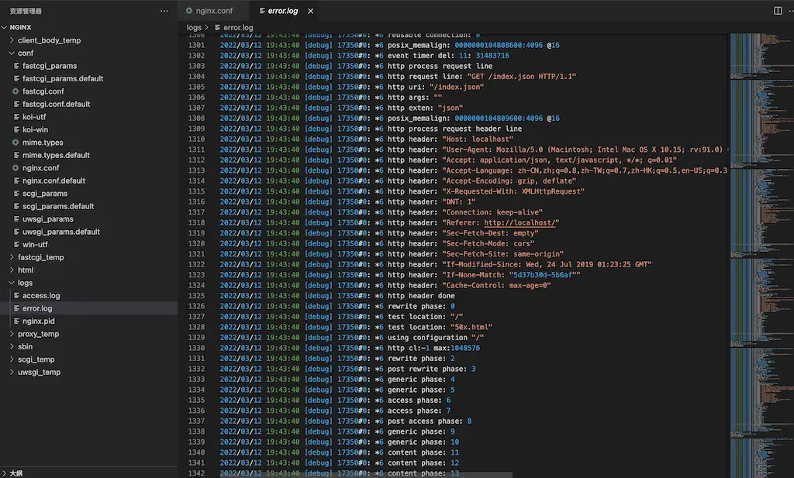
# ../nginx-party-module/echo-nginx-module是echo-nginx-module模块源代码目录
./configure \
--prefix=/Users/Shared/nginx \
--without-http_empty_gif_module \
--with-stream \
--add-module=../nginx-party-module/echo-nginx-module
make && make install
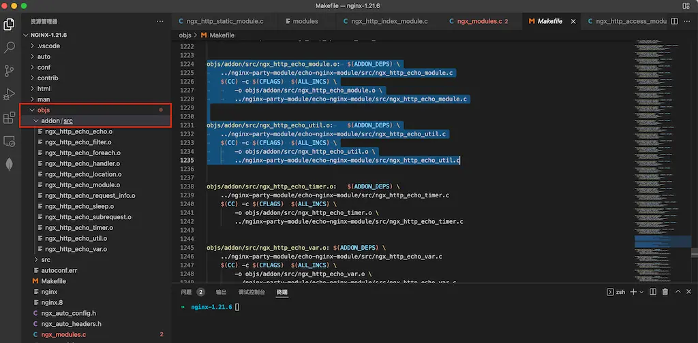
cd /Users/Shared/nginx/conf
vim nginx.conf
....
# echo-nginx-module模块详细见项目网址
location /hello {
echo "hello, world!";
}
...
cd ../sbin
./nginx
curl http://localhost/hello
hello,world!
configure脚本先引用auto目录下的options脚本,如下图所示: 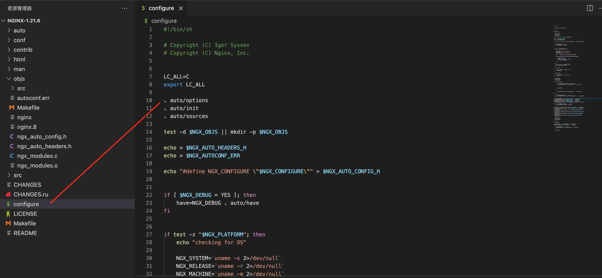
options脚本设参数默认值,如下图所示: 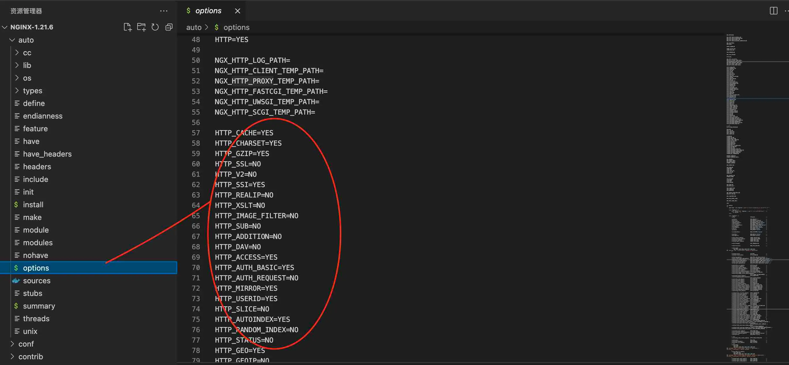
configure脚本再引用auto目录下的modules脚本,如下图所示: 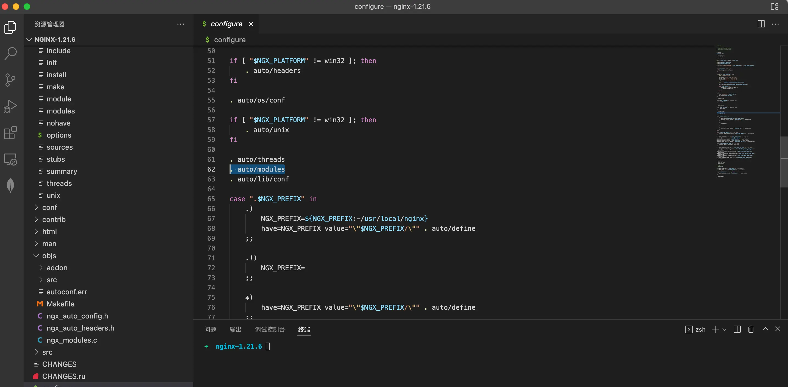
modules脚本如果参数为yes则引入编译,如下图所示: 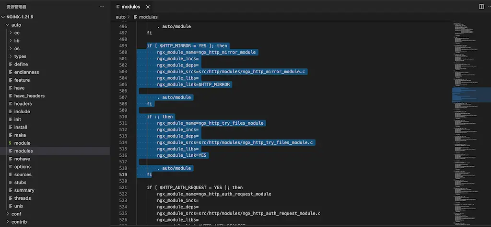
objs目录的ngx_modules.c文件就会增加引入的模块名,如下所示:
...
ngx_module_t *ngx_modules[] = {
&ngx_core_module,
&ngx_errlog_module,
&ngx_conf_module,
&ngx_regex_module,
&ngx_events_module,
&ngx_event_core_module,
&ngx_kqueue_module,
&ngx_http_module,
...
&ngx_stream_upstream_zone_module,
NULL
};
...
ngx_modules.h的声明引用ngx_modules.c中ngx_modules,如下图所示: 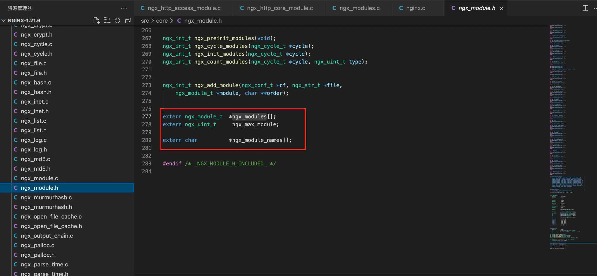
nginx.c的main函数调用nginx_module.c中ngx_preinit_modules函数,如下图所示: 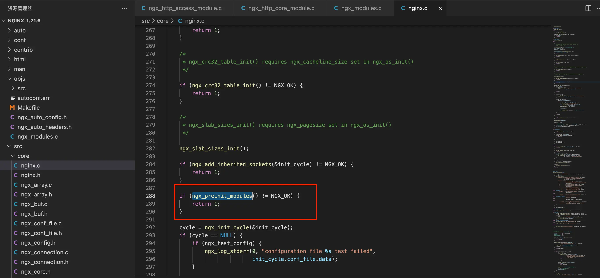
nginx_module.c中ngx_preinit_modules函数使用ngx_modules.c中ngx_modules,如下所示:
ngx_int_t
ngx_preinit_modules(void)
{
ngx_uint_t i;
/*
ngx_modules变量为ngx_modules.c中定义
*/
for (i = 0; ngx_modules[i]; i++) {
ngx_modules[i]->index = i;
ngx_modules[i]->name = ngx_module_names[i];
}
ngx_modules_n = i;
ngx_max_module = ngx_modules_n + NGX_MAX_DYNAMIC_MODULES;
return NGX_OK;
}
这里有很多优秀的nginx第三方模块,可供下载使用
安装ssl
./configure --prefix=/Users/Shared/nginx \
--add-module=../nginx-party-module/ngx_http_redis-module \
--with-http_v2_module \
--with-http_ssl_module \
--with-openssl=/opt/homebrew/Cellar/openssl@1.1/1.1.1m\
--with-debug